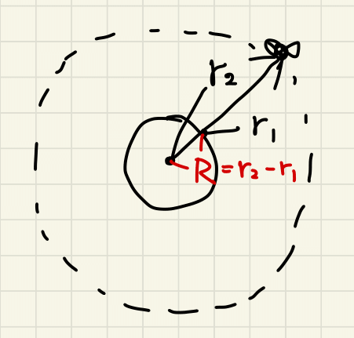
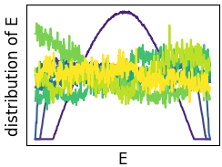
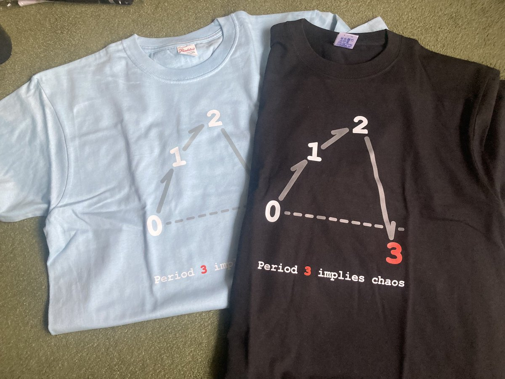
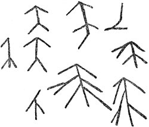
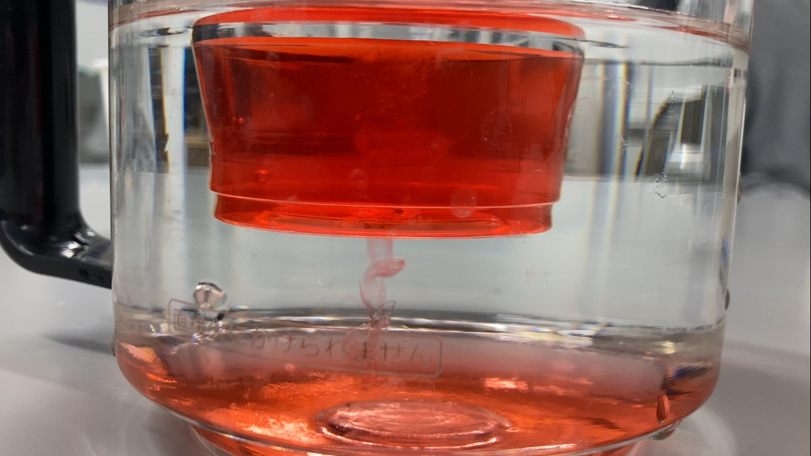

記事一覧
-

地球の大きさを測る
エラトステネスは紀元前に地球の大きさを求めた。 これは人類史に残る偉大な業績だが、隔たった2地点間の距離を別の方法で測る必要がある点で実用性に乏しい。 この記事では僕が最近考えついた、家から出ずに地球の大きさを測る方法を紹介する。
-

マルチカノニカル法
モンテカルロ法は、カノニカル分布における物理量の期待値を計算するのによく使われる。 通常の方法では温度が変わるとシミュレーションをやり直す必要がある。 この記事では、1回のシミュレーションだけで全ての温度での期待値を求められるマルチカノニカル法を説明する。
-
2024年のモンゴル旅行
2024年の夏にモンゴルに行った時の話
-

3周期はカオスを意味する
LiとYorkeは、1975年の Period three implies chaosという題の論文で、離散力学系において3周期点が存在するならば任意の自然数の周期点が存在するというすごい定理を示した。 この記事ではその証明を解説する。
-
デート代600円
モンゴル旅行に向けてパスポートを取った時の話
-

月の大きさを測る
2025年9月8日は皆既月食が起きた。 この記事では月食の観測から月の大きさを測る方法を説明する。 特にアリスタルコスの有名な方法が実はうまくいかないということと、それを超える精度の方法を紹介する。
-
琵琶湖疏水に琵琶湖の水は流れていない
琵琶湖疏水とは琵琶湖と京都を結ぶ運河であり、明治期の竣工から現在に至るまでさまざまに利用されてきた。 その名前からして、琵琶湖疏水に流れるのは琵琶湖の水だと誰もが思うだろう。 この記事ではキメラ化した琵琶湖疏水の実像を暴く。
-

外に干すか？中に干すか？
冬に洗濯物を干す時、屋外と室内のどっちが速く乾くのか気になった。 計算してみた。
-

金田一博士の事件簿
かつて北海道余市町で見つかった岩面彫刻は、金田一京助によって偽物と断定されたが、その後の調査によって実は1500年以上前の遺跡であることがわかった。 しかし時すでに遅く、保全されなかった彫刻は風化して消えてしまった。 どうしてこんなことになったのか？ この記事では当時の文献を紐解いて、金田一京助による偽作説の捏造を主張する。
-
お漢語
名詞に「お」あるいは「ご」をつけると丁寧な表現になることがある。 大抵の場合、和語には「お」が、漢語には「ご」がそれぞれつくが、「お」がつく漢語も少数ある。 この記事ではそういう例外的な「お」がつく漢語を99個リストアップする。
-

砂糖水でつくる振動子
執筆中
-
お弁当の秩序と無秩序
執筆中